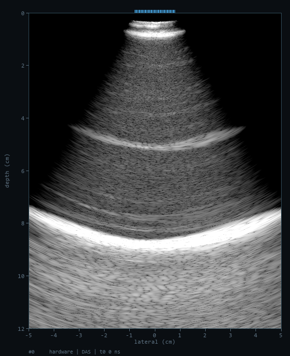
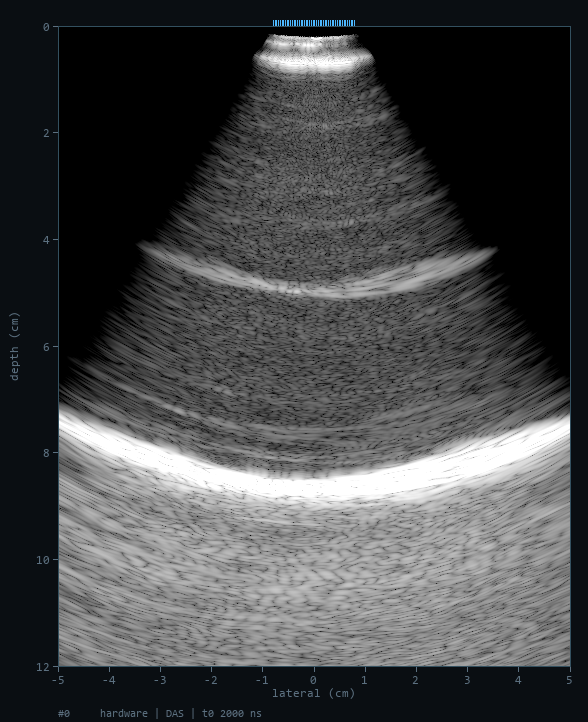
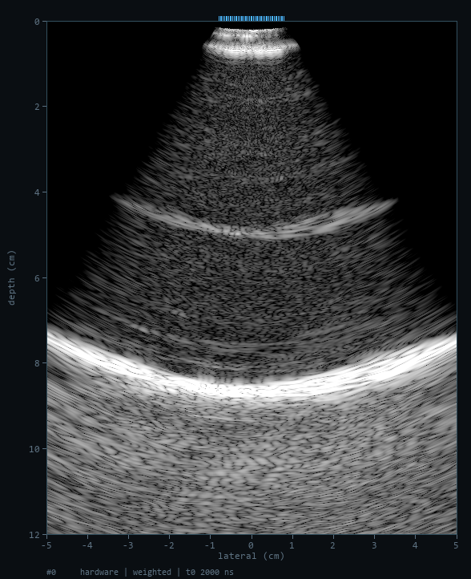
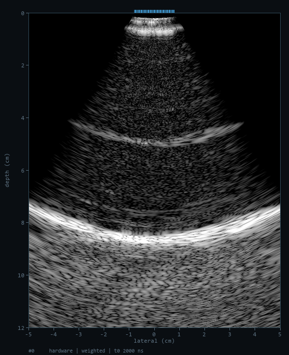
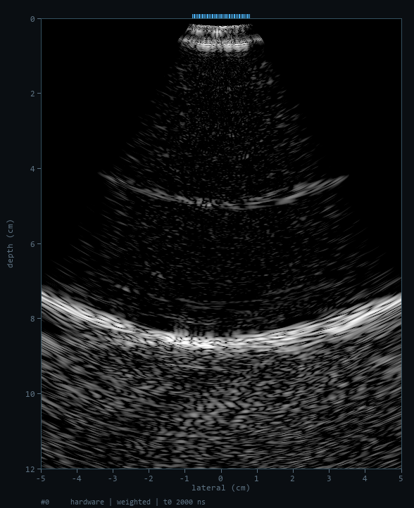
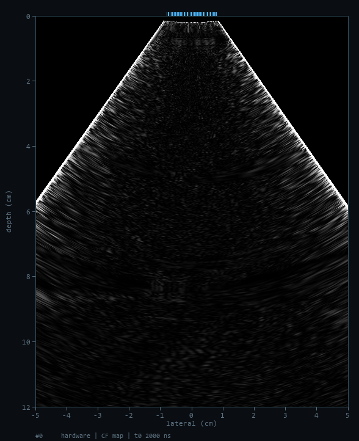

A candidate improved the declared wire score on separate frames; test another target position next.
Scores use linear ordinary-DAS data with fixed physical regions. Lower is preferred; candidates losing more than half the normalized reflector peak, increasing clutter p95 by over 3 dB, or increasing clutter energy ratio by over 50% are rejected. Coherence-weighted images are comparisons only. A wire cannot establish tissue texture quality.






| Trial | Score | Lateral −6 dB mm | Axial −6 dB mm | Clutter p95 dB | Normalized peak |
|---|---|---|---|---|---|
| display-reference | unresolved | 1.373 | 0.616 | -13.9 | 0.0020 |
| baseline | 0.000 | 1.373 | 0.616 | -13.9 | 0.0020 |
| t0-0 | 0.042 | 1.418 | 0.624 | -13.7 | 0.0019 |
| t0-1 | 0.016 | 1.390 | 0.620 | -13.8 | 0.0019 |
| t0-2 | 0.000 | 1.373 | 0.616 | -13.9 | 0.0020 |
| t0-3 | -0.015 | 1.358 | 0.611 | -14.0 | 0.0020 |
| t0-4 | -0.035 | 1.337 | 0.605 | -14.1 | 0.0020 |
| t0-5 | -0.072 | 1.303 | 0.597 | -14.1 | 0.0020 |
| band-0 | -0.120 | 1.238 | 0.597 | -14.4 | 0.0019 |
| band-1 | -0.095 | 1.269 | 0.605 | -14.4 | 0.0020 |
| band-2 | -0.129 | 1.237 | 0.586 | -14.5 | 0.0020 |
| band-3 | -0.076 | 1.300 | 0.592 | -14.1 | 0.0020 |
| band-4 | -0.046 | 1.267 | 0.673 | -13.1 | 0.0018 |
| band-5 | -0.072 | 1.303 | 0.597 | -14.1 | 0.0020 |
| apod-0 | unresolved | 0.991 | 0.581 | -13.4 | 0.0018 |
| apod-1 | -0.219 | 1.079 | 0.584 | -13.7 | 0.0021 |
| apod-2 | -0.153 | 1.187 | 0.586 | -14.0 | 0.0021 |
| apod-3 | -0.106 | 1.296 | 0.584 | -15.3 | 0.0020 |
| matched-0 | -0.219 | 1.079 | 0.584 | -13.7 | 0.0021 |
| matched-1 | -0.109 | 1.038 | 0.619 | -12.9 | 0.0010 |
| validation-0-baseline | unresolved | 1.408 | 0.612 | -13.7 | 0.0019 |
| validation-0-candidate | unresolved | 1.094 | 0.580 | -13.5 | 0.0020 |
| validation-1-baseline | unresolved | 1.408 | 0.609 | -14.0 | 0.0019 |
| validation-1-candidate | unresolved | 1.105 | 0.580 | -13.6 | 0.0020 |
| display-cf-0.25 | unresolved | 0.905 | 0.538 | -16.6 | 0.0013 |
| display-cf-0.5 | unresolved | 0.804 | 0.501 | -19.4 | 0.0008 |
| display-cf-1.0 | unresolved | 0.681 | 0.442 | -25.0 | 0.0003 |
| coherence-map | unresolved | 0.857 | 0.204 | -6.6 | 0.0000 |
[
{
"frame": 12,
"score": -0.22869129365604665,
"passed": true
},
{
"frame": 23,
"score": -0.21842198965435122,
"passed": true
}
]